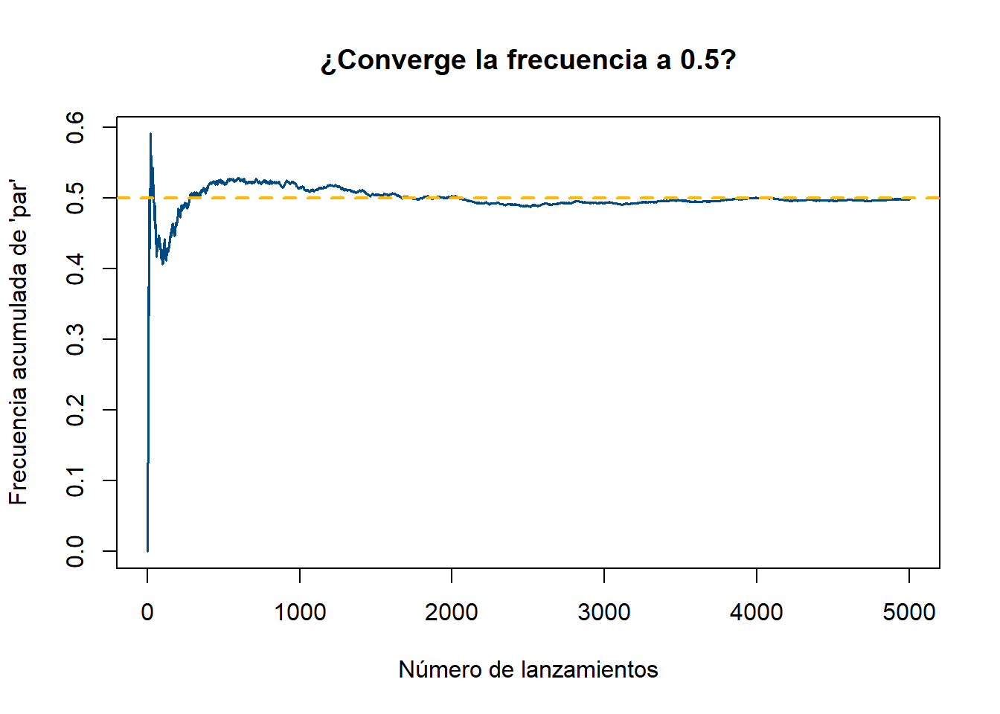

Code
# Probabilidad teórica
prob_par <- 3 / 6 # hay 3 números pares en un dado de 6 caras
prob_par[1] 0.5¿Cuál es la probabilidad de obtener un número par al lanzar un dado de seis caras? La respuesta teórica es fácil. La pregunta interesante es otra: ¿qué tan cerca está esa teoría de lo que realmente pasa si lanzas el dado muchas veces?
Antes de seguir: ¿cuál crees que es la probabilidad teórica de obtener un número par? Si simulas 1000 lanzamientos, ¿qué tan cerca de ese valor esperas que caiga la frecuencia observada?
[1] 0.5[1] 0.497Compara prob_par con frecuencia_par. ¿Qué tan cerca están? Vuelve a correr la simulación cambiando set.seed() a otro número — ¿la frecuencia observada cambia mucho?
Si la probabilidad teórica es exactamente 0.5, ¿por qué la frecuencia simulada casi nunca da exactamente 0.5? ¿Qué relación tiene esto con lo que exploraste en el Tema 0 del Módulo 1?
set.seed(2026)
n_max <- 5000
lanzamientos_largo <- sample(1:6, n_max, replace = TRUE)
es_par <- lanzamientos_largo %% 2 == 0
frecuencia_acumulada <- cumsum(es_par) / seq_len(n_max)
plot(seq_len(n_max), frecuencia_acumulada, type = "l", col = "#004B85", lwd = 1.5,
xlab = "Número de lanzamientos", ylab = "Frecuencia acumulada de 'par'",
main = "¿Converge la frecuencia a 0.5?")
abline(h = 0.5, col = "#FFB903", lwd = 2, lty = 2)
La línea azul se acerca cada vez más a la línea punteada amarilla (0.5) a medida que crece el número de lanzamientos — la misma idea de estabilización que viste con la moneda en el Tema 0, ahora aplicada formalmente al concepto de probabilidad.
Para dos eventos \(A\) y \(B\) en un mismo espacio muestral:
\[P(A \cup B) = P(A) + P(B) - P(A \cap B)\]
Se resta \(P(A \cap B)\) porque, al sumar \(P(A)\) y \(P(B)\) directamente, la intersección se cuenta dos veces.
\[P(A^c) = 1 - P(A)\]
Útil cuando calcular “que no ocurra” es más simple que calcular “que ocurra” directamente.
La probabilidad de que ocurra exactamente uno de los dos eventos, pero no ambos:
\[P(A \triangle B) = P(A) + P(B) - 2P(A \cap B)\]
Se resta \(2P(A\cap B)\) (no solo una vez, como en la unión) porque se quiere excluir por completo el caso donde ambos ocurren simultáneamente.
\(P(\text{al menos uno de } A, B) = P(A \cup B)\), que por complemento también se puede escribir como \(1 - P(\text{ninguno ocurre})\). Ambos caminos deben dar el mismo resultado — es una buena forma de verificar un cálculo.
Una fábrica de maquinaria tiene dos tipos de defectos posibles: Defecto A (falla en lubricación, \(P(A)=0.15\)) y Defecto B (falla eléctrica, \(P(B)=0.10\)), con \(P(A\cap B)=0.05\).
Paso 1 — Probabilidad de al menos un defecto:
Paso 2 — Probabilidad de exactamente un defecto (diferencia simétrica):
Paso 3 — Verificación por simulación (con cuidado):
Los eventos \(A\) y \(B\) de este problema no son independientes: \(P(A)\cdot P(B) = 0.15\times0.10 = 0.015\), que es distinto del \(P(A\cap B)=0.05\) dado. Por eso, simular runif(n) < p_A y runif(n) < p_B por separado (como si fueran independientes) daría un resultado incorrecto — reproduciría una intersección de 0.015, no de 0.05. En vez de eso, se simula directamente a partir de las 4 categorías mutuamente excluyentes que sí conocemos: solo A (0.10), solo B (0.05), ambos (0.05), ninguno (0.80).
set.seed(7)
n_sim <- 100000
p_solo_A <- p_A - p_A_y_B # 0.10
p_solo_B <- p_B - p_A_y_B # 0.05
p_ninguno <- 1 - p_A_o_B # 0.80
categoria <- sample(c("solo_A", "solo_B", "ambos", "ninguno"),
size = n_sim, replace = TRUE,
prob = c(p_solo_A, p_solo_B, p_A_y_B, p_ninguno))
mean(categoria %in% c("solo_A", "solo_B", "ambos")) # P(al menos uno) simulada[1] 0.19955[1] 0.04945Con las probabilidades \(P(A)=0.3\), \(P(B)=0.4\), \(P(A\cap B)=0.1\) de una línea de producción:
mean().2 — se resta la intersección dos veces para excluirla por completo.
---
title: "Tema P1 · Reglas básicas de probabilidad"
---
::: {.hero-motivacion}
## 🎲 Lanza un dado 1000 veces... sin lanzarlo
¿Cuál es la probabilidad de obtener un número par al lanzar un dado de seis caras? La respuesta teórica es fácil. La pregunta interesante es otra: ¿qué tan cerca está esa teoría de lo que realmente pasa si lanzas el dado muchas veces?
:::
::: {.ficha-prediccion}
Antes de seguir: ¿cuál crees que es la probabilidad teórica de obtener un número par? Si simulas 1000 lanzamientos, ¿qué tan cerca de ese valor esperas que caiga la frecuencia observada?
:::
## 🔬 Exploremos: teoría vs. simulación
```{r}
# Probabilidad teórica
prob_par <- 3 / 6 # hay 3 números pares en un dado de 6 caras
prob_par
```
```{r}
set.seed(123)
lanzamientos <- sample(1:6, size = 1000, replace = TRUE)
frecuencia_par <- mean(lanzamientos %% 2 == 0)
frecuencia_par
```
::: {.ficha-resultado}
Compara `prob_par` con `frecuencia_par`. ¿Qué tan cerca están? Vuelve a correr la simulación cambiando `set.seed()` a otro número — ¿la frecuencia observada cambia mucho?
:::
::: {.callout-tip}
## Pregunta guía
Si la probabilidad teórica es exactamente 0.5, ¿por qué la frecuencia simulada casi nunca da exactamente 0.5? ¿Qué relación tiene esto con lo que exploraste en el Tema 0 del Módulo 1?
:::
## 🎛️ Simulación: ¿qué pasa con más lanzamientos?
```{r}
#| label: fig-convergencia-probabilidad
#| fig-cap: "Convergencia de la frecuencia observada a la probabilidad teórica"
set.seed(2026)
n_max <- 5000
lanzamientos_largo <- sample(1:6, n_max, replace = TRUE)
es_par <- lanzamientos_largo %% 2 == 0
frecuencia_acumulada <- cumsum(es_par) / seq_len(n_max)
plot(seq_len(n_max), frecuencia_acumulada, type = "l", col = "#004B85", lwd = 1.5,
xlab = "Número de lanzamientos", ylab = "Frecuencia acumulada de 'par'",
main = "¿Converge la frecuencia a 0.5?")
abline(h = 0.5, col = "#FFB903", lwd = 2, lty = 2)
```
::: {.callout-note}
## Lo que deberías notar
La línea azul se acerca cada vez más a la línea punteada amarilla (0.5) a medida que crece el número de lanzamientos — la misma idea de estabilización que viste con la moneda en el Tema 0, ahora aplicada formalmente al concepto de probabilidad.
:::
## 💡 Discusión
- ¿Por qué la probabilidad teórica nunca cambia, pero la frecuencia observada sí?
- Si alguien lanza un dado solo 10 veces y obtiene 7 números pares, ¿deberías dudar de que el dado esté "cargado"? ¿Cambiaría tu respuesta si fueran 10,000 lanzamientos con 7,000 pares?
## 📖 Ahora sí, la teoría
::: {.panel-tabset}
## Regla de adición
Para dos eventos $A$ y $B$ en un mismo espacio muestral:
$$P(A \cup B) = P(A) + P(B) - P(A \cap B)$$
Se resta $P(A \cap B)$ porque, al sumar $P(A)$ y $P(B)$ directamente, la intersección se cuenta dos veces.
## Complemento
$$P(A^c) = 1 - P(A)$$
Útil cuando calcular "que no ocurra" es más simple que calcular "que ocurra" directamente.
## Diferencia simétrica
La probabilidad de que ocurra **exactamente uno** de los dos eventos, pero no ambos:
$$P(A \triangle B) = P(A) + P(B) - 2P(A \cap B)$$
Se resta $2P(A\cap B)$ (no solo una vez, como en la unión) porque se quiere **excluir por completo** el caso donde ambos ocurren simultáneamente.
## "Al menos uno" vs. "ninguno"
$P(\text{al menos uno de } A, B) = P(A \cup B)$, que por complemento también se puede escribir como $1 - P(\text{ninguno ocurre})$. Ambos caminos deben dar el mismo resultado — es una buena forma de verificar un cálculo.
:::
## 🧪 Ejemplo con datos reales (control de calidad)
Una fábrica de maquinaria tiene dos tipos de defectos posibles: Defecto A (falla en lubricación, $P(A)=0.15$) y Defecto B (falla eléctrica, $P(B)=0.10$), con $P(A\cap B)=0.05$.
**Paso 1 — Probabilidad de al menos un defecto:**
```{r}
p_A <- 0.15
p_B <- 0.10
p_A_y_B <- 0.05
p_A_o_B <- p_A + p_B - p_A_y_B
p_A_o_B
```
**Paso 2 — Probabilidad de exactamente un defecto (diferencia simétrica):**
```{r}
p_exactamente_uno <- p_A + p_B - 2 * p_A_y_B
p_exactamente_uno
```
**Paso 3 — Verificación por simulación (con cuidado):**
Los eventos $A$ y $B$ de este problema **no son independientes**: $P(A)\cdot P(B) = 0.15\times0.10 = 0.015$, que es distinto del $P(A\cap B)=0.05$ dado. Por eso, simular `runif(n) < p_A` y `runif(n) < p_B` por separado (como si fueran independientes) daría un resultado **incorrecto** — reproduciría una intersección de 0.015, no de 0.05. En vez de eso, se simula directamente a partir de las 4 categorías mutuamente excluyentes que sí conocemos: solo A (0.10), solo B (0.05), ambos (0.05), ninguno (0.80).
```{r}
set.seed(7)
n_sim <- 100000
p_solo_A <- p_A - p_A_y_B # 0.10
p_solo_B <- p_B - p_A_y_B # 0.05
p_ninguno <- 1 - p_A_o_B # 0.80
categoria <- sample(c("solo_A", "solo_B", "ambos", "ninguno"),
size = n_sim, replace = TRUE,
prob = c(p_solo_A, p_solo_B, p_A_y_B, p_ninguno))
mean(categoria %in% c("solo_A", "solo_B", "ambos")) # P(al menos uno) simulada
mean(categoria == "ambos") # P(A∩B) simulada — debe acercarse a 0.05
```
## 🧑🔬 Laboratorio
Con las probabilidades $P(A)=0.3$, $P(B)=0.4$, $P(A\cap B)=0.1$ de una línea de producción:
1. Calcula la probabilidad de que un producto tenga al menos un defecto.
2. Calcula la probabilidad de que tenga exactamente un defecto (diferencia simétrica).
3. Simula 50,000 productos y verifica ambos resultados con `mean()`.
## ✅ Ejercicios autocorregibles
### Ejercicio 1 — Completa el código
```r
# Diferencia simétrica: completa el coeficiente que falta
p_A + p_B - ___ * p_A_y_B
```
<details>
<summary>Ver respuesta</summary>
`2` — se resta la intersección dos veces para excluirla por completo.
</details>
### Ejercicio 2 — Verdadero o falso
<div class="card-lab" id="quiz-temap1">
<div style="margin-bottom: 1rem;"><strong>1. P(A∪B) = P(A) + P(B) siempre, sin excepción.</strong><br>
<label><input type="radio" name="q1" value="V"> Verdadero</label> <label style="margin-left: 1rem;"><input type="radio" name="q1" value="F"> Falso</label></div>
<div style="margin-bottom: 1rem;"><strong>2. La diferencia simétrica excluye el caso donde ambos eventos ocurren.</strong><br>
<label><input type="radio" name="q2" value="V"> Verdadero</label> <label style="margin-left: 1rem;"><input type="radio" name="q2" value="F"> Falso</label></div>
<div style="margin-bottom: 1rem;"><strong>3. P(A^c) = 1 - P(A).</strong><br>
<label><input type="radio" name="q3" value="V"> Verdadero</label> <label style="margin-left: 1rem;"><input type="radio" name="q3" value="F"> Falso</label></div>
<button class="btn-outline-prediccion" style="padding: 0.5rem 1rem; border-radius: 4px; cursor: pointer;" onclick="revisarQuizTemaP1()">Revisar respuestas</button>
<p id="resultado-quiz-temap1" style="margin-top: 1rem; font-weight: 700;"></p>
</div>
<script>
function revisarQuizTemaP1() {
const respuestas = { q1: "F", q2: "V", q3: "V" };
// Exigir que todas las preguntas estén respondidas antes de revelar el resultado
const sinResponder = Object.keys(respuestas).filter(
p => !document.querySelector(`input[name="${p}"]:checked`)
);
const resultadoEl = document.getElementById("resultado-quiz-temap1");
if (sinResponder.length > 0) {
resultadoEl.textContent = "Responde todas las preguntas antes de revisar.";
resultadoEl.style.color = "#B37D00";
return;
}
let correctas = 0;
for (const [p, c] of Object.entries(respuestas)) {
const s = document.querySelector(`input[name="${p}"]:checked`);
if (s && s.value === c) correctas++;
}
const r = document.getElementById("resultado-quiz-temap1");
r.textContent = `Obtuviste ${correctas} de ${Object.keys(respuestas).length} correctas.`;
r.style.color = correctas === Object.keys(respuestas).length ? "#004B85" : "#B37D00";
}
</script>
## 🗂️ Resumen
::: {.card-lab}
- La probabilidad teórica es un número fijo; la frecuencia observada en una simulación varía, pero converge a ella a medida que crece $n$ — la misma idea del Tema 0, ahora formalizada.
- $P(A\cup B) = P(A)+P(B)-P(A\cap B)$: se resta la intersección para no contarla dos veces.
- La diferencia simétrica resta la intersección **dos veces** porque excluye por completo el caso "ambos ocurren".
:::